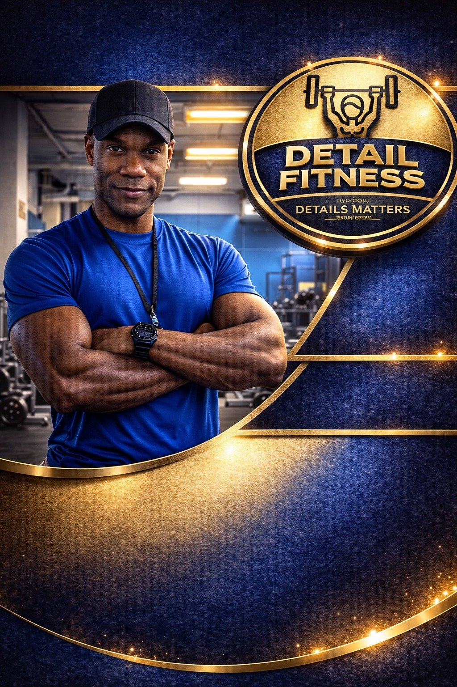

<!DOCTYPE html>
<html lang="en">
<head>
<meta charset="UTF-8">
<meta name="viewport" content="width=device-width, initial-scale=1.0">
<title>Detail Fitness NYC</title>
<style>
body {
    font-family: Arial, Helvetica, sans-serif;
    margin: 0;
    background-color: #111;
    color: #fff;

    


    


}
h1 {
    margin: 0;
    font-size: 32px;
    letter-spacing: 1px;
}
.tagline {
    color: #c8a96a;
    margin-top: 10px;
}
.section {
    padding: 40px 20px;
    max-width: 900px;
    margin: auto;
}
.card {
    background: #1b1b1b;
    padding: 25px;
    margin-bottom: 20px;
    border-radius: 8px;
    border: 1px solid #333;
}
.button {
    
    background: #c8a96a;
    color: #000;
    padding: 12px 18px;
    border-radius: 6px;
    text-decoration: none;
    font-weight: bold;
}
footer {
    text-align: center;
    padding: 20px;
  }
.hero-image{
  width:92%;
  max-width:720px;
  height:auto;
  display:block;
  margin:18px auto 24px auto;
  border-radius:14px;
  box-shadow:0 18px 45px rgba(0,0,0,.55);
}


<header style="background:#000;text-align:center;padding:40px 20px;border-bottom:2px solid #c9a96a;">


</header>
<div class="section">


<div class="card">
<h2>About</h2>
<p>
   Terrence Powell is a NASM Certified Personal Trainer, Focus Personal Training Institute Master Graduate, and Precision Nutrition Level 1 Coach specializing in strength training, corrective exercise, and sustainable fitness. 
With over four years of corporate gym and private training experience across Brooklyn, Queens, and Manhattan, Terrence helps professionals build strength, improve movement quality, and achieve long-term results.

His philosophy is simple: motion is medicine. Proper technique, free-weight training, and performance-focused programming help clients stay strong, independent, and resilient throughout life.

As a nutrition coach, Terrence emphasizes protein intake and sustainable habits to support recovery, body composition, and long-term health.

Supportive, detail-oriented, and results-focused, his coaching helps clients move better, feel stronger, and stay consistent for life. 
</p>
    <div class="card">


</div>
</div>

<div class="card">
<h2>Services</h2>
<ul>
<li>In‑Home Personal Training</li>
<li>Luxury Building Gym Training</li>
<li>12‑Week Body Transformation Programs</li>
<li>Strength & Movement Coaching</li>
<li>Nutrition Guidance</li>
</ul>
</div>

<div class="card">

<h2>Book Your Executive Assessment</h2>

<a class="button" href="https://buy.stripe.com/5kQbJ3bcr2sYgHadxI9sk02"
target="_blank" rel="noopener noreferrer">

Book Executive Assessment — $200

</a>

</div>

<div class="card">
  <h2>Book a Consultation</h2>
  <p>Ready to get started? Schedule your consultation today.</p>

<a class="button" href="https://calendar.app.google/FqDkkVB9s8dt6u1d6" target="_blank">
    Schedule Consultation Call
  </a>
</div>
</div>
<footer>
  © 2026 Detail Fitness NYC — Private Coaching Across NYC
</footer>
</body>
</html>
